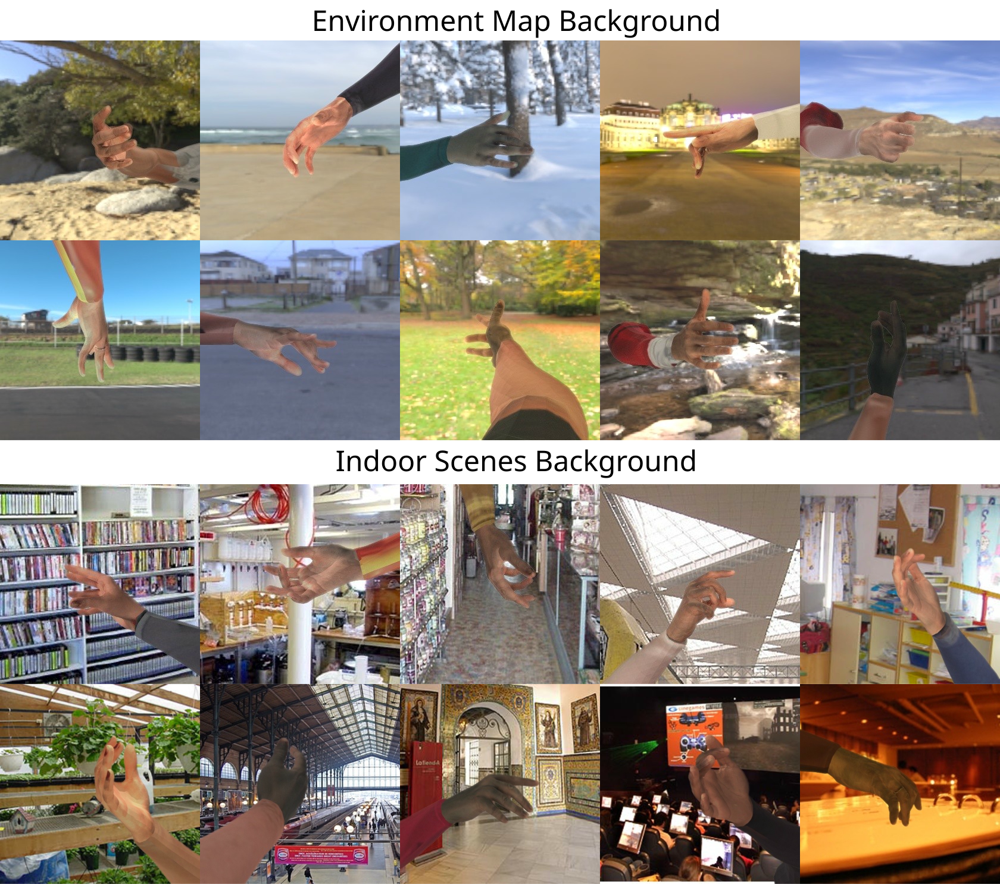
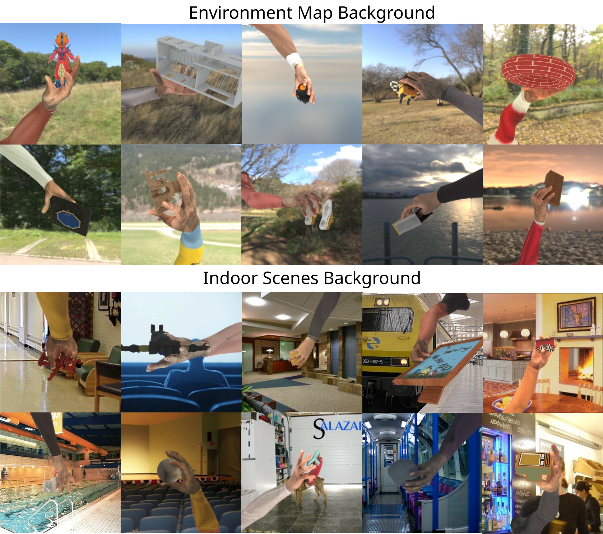
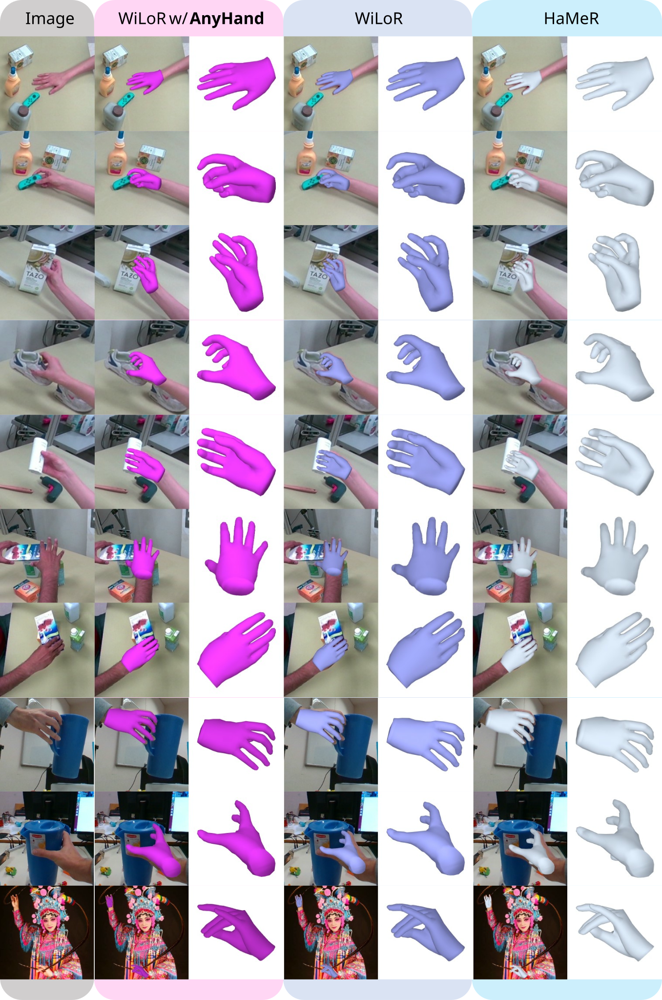

1UC San Diego 2[Affiliation] 3Imperial College London 4Nanyang Technological University
We present AnyHand, a large-scale synthetic dataset designed to advance the state of the art in 3D hand pose estimation from both RGB-only and RGB-D inputs. While recent foundation-style approaches have shown that increasing the quantity and diversity of training data can markedly improve performance and robustness, existing real-world datasets remain limited in coverage, and prior synthetic datasets rarely provide occlusions, arm details, and aligned depth together at scale.
To address this bottleneck, AnyHand contains 2.5M single-hand images and 4.1M hand-object interaction RGB-D images, all with rich geometric annotations. In the RGB-only setting, we show that augmenting the original training sets of existing baselines with AnyHand yields significant gains on multiple benchmarks, including FreiHAND and HO-3D, even when keeping the architecture and training scheme fixed.
More importantly, models trained with AnyHand generalize better to the out-of-domain HO-Cap dataset without any fine-tuning. We further introduce a lightweight depth fusion module that can be easily integrated into existing RGB-based models. Trained with AnyHand, the resulting RGB-D model achieves superior performance on HO-3D, demonstrating both the value of depth integration and the effectiveness of our synthetic data.
AnyHand consists of two complementary splits. AnyHand-Single (2.1M images) covers isolated hand scenes across diverse backgrounds and viewpoints. AnyHand-Interact (4.2M images) adds hand-object interaction scenarios sourced from GraspXL's physics-based simulation with over 10M sequences and 500K+ objects. Both splits are rendered with full multi-modal annotations: RGB, depth, mask, bounding box, camera intrinsics, and 3D pose/shape.
Generation pipeline. Hand shapes are sampled from real-dataset MANO statistics; poses from a DPoser-Hand diffusion prior; appearances via 10,240 Handy textures and 254 SMPLitex arm textures; scenes rendered in Blender with randomized lighting (1–5 lights), backgrounds, and camera parameters (FOV 30°–40°, distance 0.6–1.0 m).
AnyHand covers a wide range of hand poses, skin tones, viewpoints, lighting conditions, and interaction scenarios. Each rendered image is paired with a 3D hand mesh, 2D joint annotations, and a depth map.

Qualitative results for AnyHand-Single. The dataset covers diverse single-hand poses, viewpoints, textures, and scene contexts.

Qualitative results for AnyHand-Interact. The dataset captures diverse hand-object interactions with varied grasps, objects, and occlusion patterns.
Co-training WiLoR with AnyHand substantially improves mesh-to-image alignment on real-world images — recovering more accurate hand scale, palm width, finger thickness, and articulation, especially under hand-object interaction and challenging viewpoints.

In-the-wild qualitative comparisons. WiLoR w/ AnyHand (pink) vs. original WiLoR (blue) and HaMeR (white).